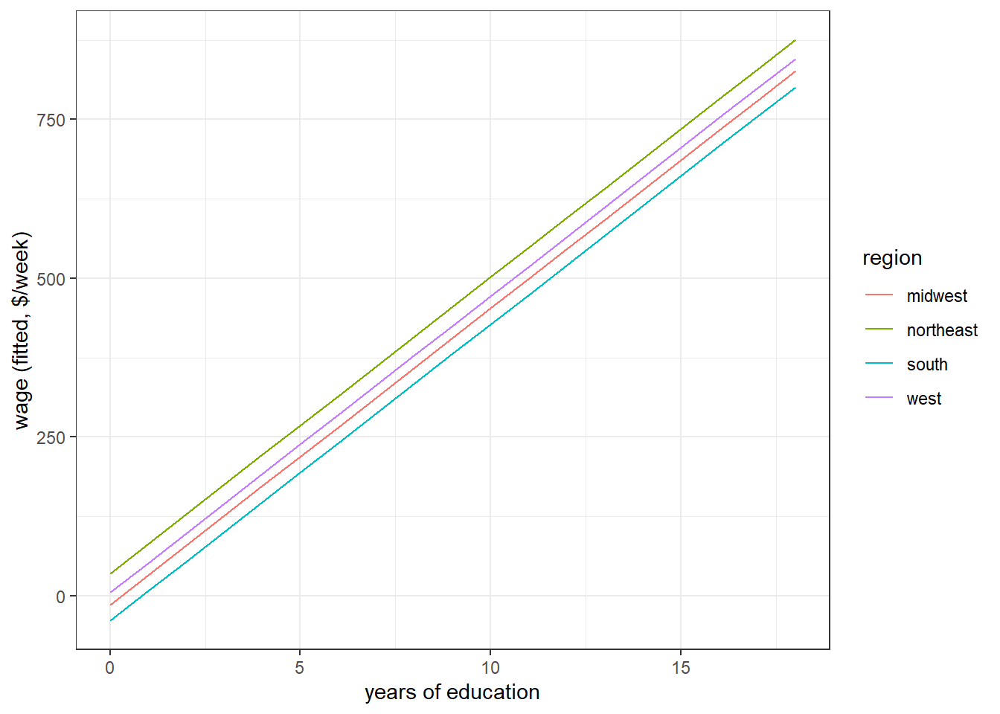
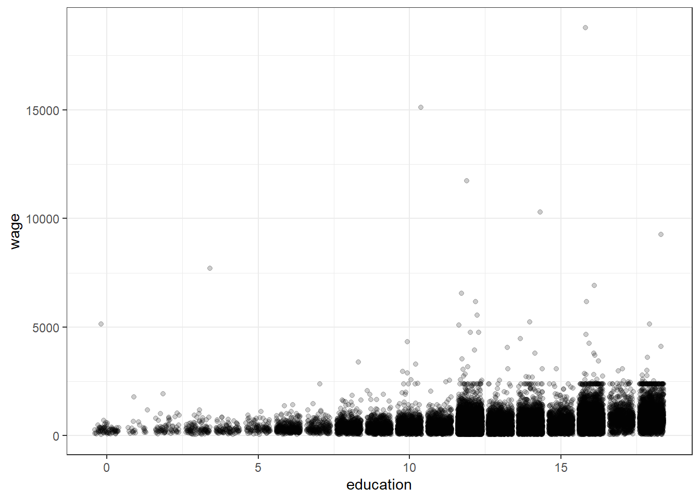
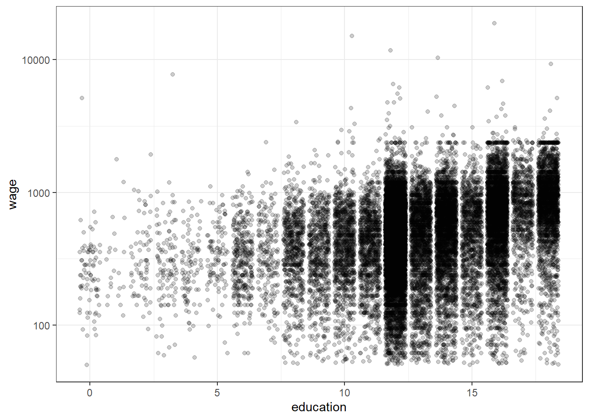
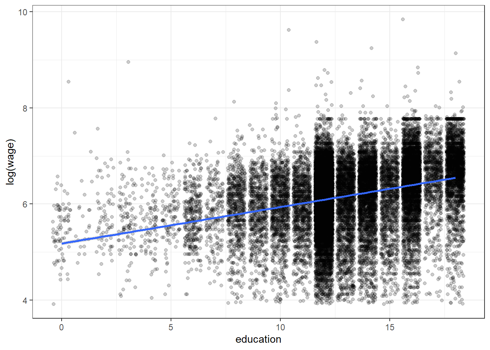
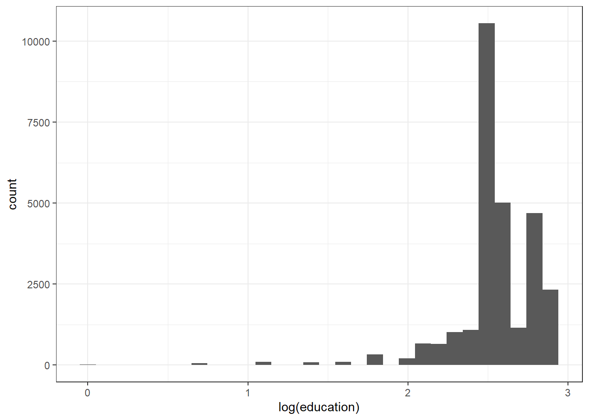

8 The shape of the right-hand side
Up to this point, you have learned about linear regression, and how we can interpret a coefficient on a variable as the expected change in \(Y\) due to a one-unit change in this variable. If we can go further and establish that our \(X\) is uncorrelated with \(\epsilon\), then we can also claim that the coefficient is the causal effect.
But what if we are trying to estimate something that is not just the effect of one of our variables on \(Y\), but maybe a difference in effects? Maybe we would prefer to estimate a proportal effect rather than an absolute effect? Perhaps we expect that the effect we are estimating could be different between two or more groups in our data, and we would like to test whether this is true.
This chapter is aimed at helping you work out how to include the right variables, and transformations of variables, on the right-hand side of your model so that you can do things like this. We will begin by formalizing linear regression as a model of the conditional mean of \(Y\), and then we will investigate how we can work out how to interpret models that have transformed variables included on the right-hand side.
8.1 Linear regression as a model for conditional expectation
Linear regression is a model for the expectation of \(Y\) conditional on \(X\). To see this, we combine our regression equation:
\[ Y_i=\beta_0+\beta_1X_i+\epsilon_i \] with our conditional independence or “no endogeneity” assumption about the error term:
\[ E[X_i\epsilon_i]=0 \] which can also be written as:
\[ E[\epsilon_i\mid X_i]=0 \]
So if we take the conditional expectation of both sides of the regression equation, we get:
\[ E[Y_i\mid X_i]=E\left[\beta_0+\beta_1X_i+\epsilon_i\mid X_i\right] \]
But because the only random variable on the right-hand side of this equation is \(\epsilon_i\), we can simplify this to:
\[ \begin{aligned} E[Y_i\mid X_i]&=\beta_0+\beta_1X_i+E[\epsilon_i\mid X_i]\\ &=\beta_0+\beta_1X_i \end{aligned} \]
where the second line follows because of the conditional independence assumption. Hence, we can interpret our bivariate linear regression as modeling the conditional expectation of \(Y\) given \(X\) as a straight line. In fact, with more than one right-hand-side variable, this interpretation is exactly the same. That is, if we are estimating the equation: \[ Y_i=\beta_0+\beta_1X_{1,i}+\beta_2X_{2,i}+\cdots+\epsilon_i \] then with the same “no endogeneity” assumption, we get:
\[ E[Y_i\mid X_1,X_2,\ldots,X_k]=\beta_0+\beta_1X_{1,i}+\beta_2X_{2,i}+\cdots+\beta_kX_{k,i}\quad(\star) \]
Importantly, note here that we are conditioning the expectation over all of the \(X\)s.
8.2 An example dataset
Here I use the CPS1988 dataset, which you can download like this:
library(tidyverse)
library(stargazer)
d<-read.csv("https://vincentarelbundock.github.io/Rdatasets/csv/AER/CPS1988.csv")
d %>% head() %>% knitr::kable()| rownames | wage | education | experience | ethnicity | smsa | region | parttime |
|---|---|---|---|---|---|---|---|
| 1 | 354.94 | 7 | 45 | cauc | yes | northeast | no |
| 2 | 123.46 | 12 | 1 | cauc | yes | northeast | yes |
| 3 | 370.37 | 9 | 9 | cauc | yes | northeast | no |
| 4 | 754.94 | 11 | 46 | cauc | yes | northeast | no |
| 5 | 593.54 | 12 | 36 | cauc | yes | northeast | no |
| 6 | 377.23 | 16 | 22 | cauc | yes | northeast | no |
The variables in this dataset are:
wage(in dollars per week).education(number of years)experience(number of years of potential work experience)ethnicity(factor with levels “cauc” and “afam”)smsa(Factor. Does the individual reside in a Standard Metropolitan Statistical Area (SMSA)?)region(Factor with levels “northeast”, “midwest”, “south”, “west”.)parttime(Factor. Does the individual work part-time?)
In particular, let’s suppose that we are interested in the determinates of wages, so we will estimate equations with wage on the left-hand side. For the purposes of this chapter, we will always assume that the “no endogeneity” assumption of \(E[X\epsilon]=0\) always holds, but you should think about why this might not be a good assumption.
It is going to be very important that we understand what the above variables mean, and how they are measured. This is because the units of our coefficients will inherit the units of our variables.
8.3 Marginal effects
An immediate observation of the above equation (\(\star\)) is that the coeffieints represent the derivative of the conditional expectation with respect to a particular \(X\). That is, suppose I take the derivative of both sides of \((\star)\) with respect to \(X_2\), I will get:
\[ \begin{aligned} \frac{\partial E[Y_i\mid X_1,X_2,\ldots,X_k]}{\partial X_2}&=\beta_2 \end{aligned} \]
Note here that we needed the “no endogeneity” assumption to get here. In particular, had we not assumed that the \(X\)s are uncorrelated with \(\epsilon\), we would have ended up with:
\[ \begin{aligned} \frac{\partial E[Y_i\mid X_1,X_2,\ldots,X_k]}{\partial X_2}&=\beta_2+\frac{\partial E[\epsilon_i\mid X_1,X_2,\ldots, X_K]}{\partial X_2} \end{aligned} \]
That is, the slope of the line we are estimating with respect to \(X_2\) (the left-had side) is equal to the effect of \(X_2\) on \(Y_i\) (i.e. \(\beta_2\)), plus the average “effect” of \(X_2\) on \(\epsilon_i\). The only way we can interpret \(\beta_2\) as the causal effect of \(X_2\) on \(Y\) is if this second term is zero, otherwise we are measuring the causal effect plus the effect of things in the error term that are correlated with \(X_2\) changing.
In our example, if we estimate a regression with just continuous variable on the right-hand side, then all coefficients will have this interpretation:
| Dependent variable: | |
| wage | |
| education | 60.896*** |
| (0.883) | |
| experience | 10.606*** |
| (0.196) | |
| Constant | -385.083*** |
| (13.243) | |
| Observations | 28,155 |
| R2 | 0.177 |
| Adjusted R2 | 0.177 |
| Residual Std. Error | 411.510 (df = 28152) |
| F Statistic | 3,023.970*** (df = 2; 28152) |
| Note: | p<0.1; p<0.05; p<0.01 |
From this, we can interpret the coefficients as follows:
education: on average, people with an additional year of education earn $60.90 more per weekexperience: on average, people with an additional year of experience earn $10.61 more per weekconstant: People with zero education and zero experience earn -$385.08 per week
Note that the interpretation of the constant is rather silly here. This is a common occurrance, especially when we do not have many observations where all of the right-hand side variables are close to zero
For the remainder of this chapter, we will maintain the “no endogeneity” assumption, but add more complexity to the right-hand side in order to allow our conditional expectation, and its derivatives, to take on particular forms.
8.4 Categorical variables
Categorical variables pose a unique, but not difficult, problem for interpreting effects, because it does not make sense to take the derivative with respect to a categorical variable. To illustrate, suppose we are estimating a model which includes a variable \(D\), which can only take on values of zero or one. The model looks something like this:
\[ \begin{aligned} Y_i&=\beta_0+\beta_1D_i+\beta_2X_i+\epsilon_i \end{aligned} \]
which, along with the “no endogeneity” assumption gets us the conditional expectation:
\[ E[Y_i\mid D_i,X_i]=\beta_0+\beta_1D_i+\beta_2X_i \]
However, since \(D\) is a discrete variable, it does not make sense to take the derivative with respect to \(D\) to work out how \(D\) affects \(Y\). Instead, we take the difference:
\[ \begin{aligned} E[Y_i\mid D_i=1,X_i]&-E[Y_i\mid D_i=0,X_i]\\ &=\beta_0+\beta_1\times 1+\beta_2X_i-(\beta_0+\beta_1\times 0+\beta_2X_i)\\ &=\beta_1 \end{aligned} \]
Consider for example the first column in the following regression table:
reg1<-lm(data=d,formula=wage~education+experience+I(smsa=="yes"))
reg2<-lm(data=d,formula=wage~education+as.factor(region))
stargazer(reg1,reg2,type="html")| Dependent variable: | ||
| wage | ||
| (1) | (2) | |
| education | 59.719*** | 46.682*** |
| (0.881) | (0.889) | |
| experience | 10.657*** | |
| (0.195) | ||
| I(smsa == “yes”) | 94.944*** | |
| (5.609) | ||
| as.factor(region)northeast | 49.078*** | |
| (7.487) | ||
| as.factor(region)south | -25.080*** | |
| (6.969) | ||
| as.factor(region)west | 19.298** | |
| (7.599) | ||
| Constant | -441.214*** | -13.906 |
| (13.587) | (12.882) | |
| Observations | 28,155 | 28,155 |
| R2 | 0.185 | 0.095 |
| Adjusted R2 | 0.185 | 0.095 |
| Residual Std. Error | 409.439 (df = 28151) | 431.564 (df = 28150) |
| F Statistic | 2,131.927*** (df = 3; 28151) | 736.339*** (df = 4; 28150) |
| Note: | p<0.1; p<0.05; p<0.01 | |
The interpretation of the coefficient on I(smsa=="yes") is that people who live in a SMSA earn $95 more per week than people who do not.
But not all categorical variables take on just ones or zeros. Sometimes there are more than two categories. In this instance, we need to be very careful about interpreting their coefficients. Note that in the second column of the above table, there are three variables associated with region, but there are four regions in the data:
## [1] "northeast" "midwest" "south" "west"The regression has dropped “midwest” from the set of explanatory variables. This is because if we included all four, they would be perfectly collinear, and we would not be able to estimate the model. Instead, we need to interpret these variables as differences relative to the omitted category. For example, poeple in the Northeast earn about $39 more per week than people in the Midwest.
Graphically, we are allowing our model to have different intercepts based on the variable region:
d$fit<-reg2$fitted.values
(ggplot()
+geom_line(data=d,aes(x=education,y=fit,color=region,group=region))
+theme_bw()
+xlab("years of education")
+ylab("wage (fitted, $/week)")
)
8.5 Interactions
So having the intercept vary in our models might be useful if, we believe that there are level effects in our categories. In the previous example, we might suspect that wages in some regions of the US may be higher than others. However me might also want the slopes of our model to vary by a categorical variable. We can achieve this with an interaction:
\[ \begin{aligned} Y_i&=\beta_0+\beta_1X_i+\beta_2D_i+\beta_3X_iD_i+\epsilon_i\\ E[Y_i\mid X_i,D_i]&=\beta_0+\beta_1X_i+\beta_2D_i+\beta_3X_iD_i \end{aligned} \]
Now, if we take the derivative with respect to \(X_i\), we get:
\[ \begin{aligned} \frac{\partial E[Y_i\mid X_i,D_i]}{\partial X_i}&=\beta_1+\beta_3D_i \end{aligned} \]
That is, when \(X\) increases by one unit, \(E[Y_i\mid X_i,D_i]\) increases by \(\beta_1\) if \(D_i=0\), and \(\beta_1+\beta_3\) if \(D_i=1\). Therefore, we can interpret \(\beta_1\) as the “effect” of \(X\) on \(Y\) when \(D=0\), and \(\beta_3\) is the change in this effect when \(D=1\).
To illustrate, let’s estimate a model that allows the slopes for education and experience to depend on whether or not the person lives in a SMSA, and also allows for the intercepts to vary by SMSA. For this, we need education, experience, and SMSA on their own, as well as education and experience interacted with SMSA:
reg1<-lm(data=d,formula=wage~education+experience+I(smsa=="yes")+education*I(smsa=="yes")+experience*I(smsa=="yes"))
stargazer(reg1,type="html")| Dependent variable: | |
| wage | |
| education | 44.991*** |
| (1.861) | |
| experience | 7.825*** |
| (0.382) | |
| I(smsa == “yes”) | -218.535*** |
| (30.990) | |
| education:I(smsa == “yes”) | 18.989*** |
| (2.112) | |
| experience:I(smsa == “yes”) | 3.781*** |
| (0.444) | |
| Constant | -201.027*** |
| (27.063) | |
| Observations | 28,155 |
| R2 | 0.189 |
| Adjusted R2 | 0.188 |
| Residual Std. Error | 408.594 (df = 28149) |
| F Statistic | 1,308.160*** (df = 5; 28149) |
| Note: | p<0.1; p<0.05; p<0.01 |
Here we interpret the coeffieicnts as follows:
- People with an additional year of education earn on average \(\$45\) more per week if they are not in an SMSA, and \(\$45+\$19=\$64\) if they live in an SMSA.
- People with an additional year of experience earn on average \(\$7.83\) more per week if they do not live in an SMSA, and \(\$7.83+\$3.78=\$11.61\) if they live in an SMSA.
8.6 Logarithms
Sometimes, including logged variables, rather than in their levels, makes more sense. For our example, it certainly does. Here is what our data look like if we plot them in levels:

And here is what they look like if we plot them with wage on a log scale:
(
ggplot(d,aes(y=wage,x=education))+geom_jitter(alpha=0.2)+theme_bw()
+scale_y_continuous(trans="log10")
)
That is, sometimes it makes more sense to draw a straight line through the logged data, like this:
(
ggplot(d,aes(y=log(wage),x=education))+geom_jitter(alpha=0.2)+theme_bw()
+geom_smooth(method="lm",formula="y~x")
)
This may be for a whole lot of reasons, but probably the reason used most in economics is that logged variabes have a useful “percentage change” interpretation. To see this, note that the line in the above plot could be estimated using the following regression model:
\[ \begin{aligned} \log Y_i&=\beta_0+\beta_1X_i+\epsilon_i \end{aligned} \]
Taking the derivative with respect to \(X_i\): \[ \begin{aligned} \frac{\partial \log(Y_i)}{\partial X_i}&=\beta_1 \end{aligned} \]
But with a bit of re-arranging of the left-hand-side of this equation, we can express it as:
\[ \begin{aligned} \frac{\partial \log(Y_i)}{\partial X_i} &=\frac{\frac{\partial Y_i}{\partial X_i}}{Y_i} \end{aligned} \]
So \(\beta_1\) is a fractional change in \(Y\). Specifically, if \(X\) increases by a small amount \(\delta\), we can expect \(Y\) to increase by \(\beta_1 Y\delta\). Alternatively, \(Y\) increases by \(\beta_1\delta\times 100\%\).
With our example dataset, we could estimate a model with percentage change interpretations like this:
reg1<-lm(data=d,formula=log(wage)~education+experience+I(smsa=="yes")+as.factor(region))
stargazer(reg1,type="html")| Dependent variable: | |
| log(wage) | |
| education | 0.099*** |
| (0.001) | |
| experience | 0.020*** |
| (0.0003) | |
| I(smsa == “yes”) | 0.144*** |
| (0.009) | |
| as.factor(region)northeast | 0.055*** |
| (0.011) | |
| as.factor(region)south | -0.064*** |
| (0.010) | |
| as.factor(region)west | 0.015 |
| (0.011) | |
| Constant | 4.422*** |
| (0.022) | |
| Observations | 28,155 |
| R2 | 0.225 |
| Adjusted R2 | 0.225 |
| Residual Std. Error | 0.630 (df = 28148) |
| F Statistic | 1,363.993*** (df = 6; 28148) |
| Note: | p<0.1; p<0.05; p<0.01 |
Interpreting the first three coefficients:
- An additional year of education raises wages by approximately 10%
- An additional year of experience raises wages by approximately 2%
- People who live in an SMSA earn about 14% more than people who do not live in an SMSA
But we don’t have to stop there. Sometimes it is useful to have logs on both sides of the equation, so it would look somethinmg like this:
\[ \log Y_i=\beta_0+\beta_1\log X_i+\epsilon_i \]
Why would we ever want to do this? Well, for economists, this means that \(\beta_1\) can be interpreted as an elasticity, which we can see by differentiating with respect to \(X_i\):
\[ \frac{\partial \log Y_i}{\partial X_i}=\frac{\frac{\partial Y_i}{\partial X_i}}{Y_i}=\beta_1\frac{1}{X_i} \] and with a bit of re-arranging:
\[ \beta_1=\frac{\partial Y_i}{\partial X_i}\frac{X_i}{Y_i} \]
which is exactly the formula for an elasticity. Doing this for our wages example:
reg1<-lm(data=d %>% filter(education>0 & experience>0),formula=log(wage)~log(education)+log(experience)+I(smsa=="yes")+as.factor(region))
stargazer(reg1,type="html")| Dependent variable: | |
| log(wage) | |
| log(education) | 0.946*** |
| (0.014) | |
| log(experience) | 0.293*** |
| (0.004) | |
| I(smsa == “yes”) | 0.171*** |
| (0.008) | |
| as.factor(region)northeast | 0.054*** |
| (0.011) | |
| as.factor(region)south | -0.067*** |
| (0.010) | |
| as.factor(region)west | 0.014 |
| (0.011) | |
| Constant | 2.923*** |
| (0.040) | |
| Observations | 26,816 |
| R2 | 0.249 |
| Adjusted R2 | 0.249 |
| Residual Std. Error | 0.589 (df = 26809) |
| F Statistic | 1,484.467*** (df = 6; 26809) |
| Note: | p<0.1; p<0.05; p<0.01 |
Again, interpreting the first three coefficients:
- A 1% increase in education raises wages by about 0.9%
- A 1% increase in experience raises wages by about 0.3%
- People who live in an SMSA have wages about 17% higher than those who do not live in an SMSA
Note that, while the numbers changed, our interpretation of the coefficient on SMSA does not change. This is because we have the same left-hand-side variable, and we have left SMSA in there in levels (i.e. not in logs). In fact, you should never log a categorical variable. As the numbers in a categorical variable only identify a category, not a value, taking the log of them does not make sense.
8.7 Polynomials
If we can include \(X\) on the right-hand side of a regression, then we can also include any transformation of \(X\) on the right-hand side (although we shouldn’t do this with categorical variables, see above). Including a polynomial of \(X\) on the right-hand side of a regression could actually make a lot of sense if we expect that there is a nonlinear relationship between \(X\) and \(Y\). That is, even though linear regression is a linear model, it doesn’t preclude us from taking nonlinear transformations of our variables. The polynomial is used a lot in situations where we expect a nonlinear realtionship, but don’t know what that relationship looks like. The reson for this is that polynomials can be motivated as a Taylor approximation of a function:
\[ f(x)\approx f(x_0)+\sum_{k=1}^K\frac{1}{k!}\frac{\partial^k f(x_0)}{\partial x^k}(x-x_0)^k \]
That is, including \(X\), \(X^2\), and \(X^3\) on the right-hand side means that we are approximating whatever function \(f\) really is with a \(K=3\)rd order polynomial. Since we only have 20-ish years of education to work with, let’s do this for \(K=2\) in our example data:
reg1<-lm(data=d %>% filter(education>0 & experience>0),formula=log(wage) ~ poly(log(education),degree=2)+poly(log(experience),degree=2)+I(smsa=="yes")+as.factor(region))
stargazer(reg1,type="html")| Dependent variable: | |
| log(wage) | |
| poly(log(education), degree = 2)1 | 40.009*** |
| (0.601) | |
| poly(log(education), degree = 2)2 | 17.665*** |
| (0.577) | |
| poly(log(experience), degree = 2)1 | 42.026*** |
| (0.589) | |
| poly(log(experience), degree = 2)2 | -11.444*** |
| (0.585) | |
| I(smsa == “yes”) | 0.152*** |
| (0.008) | |
| as.factor(region)northeast | 0.055*** |
| (0.010) | |
| as.factor(region)south | -0.073*** |
| (0.010) | |
| as.factor(region)west | -0.005 |
| (0.010) | |
| Constant | 6.120*** |
| (0.009) | |
| Observations | 26,816 |
| R2 | 0.285 |
| Adjusted R2 | 0.285 |
| Residual Std. Error | 0.575 (df = 26807) |
| F Statistic | 1,337.989*** (df = 8; 26807) |
| Note: | p<0.1; p<0.05; p<0.01 |
In this case, we have a statistically significant squared term for both log-education and log-wage. This tells us that including the squared terms buys us substantially more explanatory power.
But how do we interpret these new coefficients? Note that the coeffienect on \(\log(\mathrm{education})^2\) is positive. This means that the relationship between wages and education is U-shaped. Furthermore, since the equation is:
\[ \log \mathrm{wage}_i=\beta_0+40\log(\mathrm{education})+18\log(\mathrm{education})^2+(\text{other things}) \]
This relationship has a minimum at (using the quadratic formula):
\[ -\frac{40}{2\times 18}\approx -1 \]
But let’s have a look at the distribution of log education:
## `stat_bin()` using `bins = 30`. Pick better value with `binwidth`.## Warning: Removed 79 rows containing non-finite outside the scale range
## (`stat_bin()`).
Since this value does not show up in the data, I would not interpret it as “the wages minimizing education is \(\exp(-1)\) years”, rather that there is an increasing, convex relationship between log wages and log education.
8.8 Exercises
8.8.1 Baking a cake
This is a past exam question.
You are interested in consumers’ willingness to pay for cake, and how this varies with different recipes. You collect a dataset containing the following variables (units in parentheses):
WTP– Consumers’ willingness to pay for cake ($)F– Mass of flour in cake (kg)B– mass of butter in cake (kg)C– mass of chocolate in cake (kg)E– mass of eggs in cake (kg)S– mass of sugar in cake (kg)
Write down an econometric model in the form: \[Y_i=\beta_0+\beta_1X_{i,1}+\beta_2X_{i,2}+\ldots+\epsilon_i\] to answer the following questions. Explain which parameters or functions of the parameters estimate the desired marginal effect. You may (and will have to) transform these variables to answer some of the questions.
- On average consumers are willing to pay \(\beta\)% more for a cake has 1kg more flour.
- A cake with chocolate will on average sell for \(\$\beta\) more than the same cake without chocolate
- The optimal ratio of butter to flour (i.e. \(B_i/F_i\)) is
- Consumers’ marginal willingness to pay for flour (i.e. \(\frac{\partial WTP_i}{\partial F_i}\)) is \(\$\beta\) greater if the cake contains chocolate (compared to if it does not).
8.8.2 PSID Earnings Panel Data
This is a past take-home exam question (it was given during COVID). As such, students had access to their computers while doing this question.
Load the PSID Earnings Panel Datsset available here: https://vincentarelbundock.github.io/Rdatasets/csv/AER/PSID7682.csv
The accompanying documentation is available here: https://vincentarelbundock.github.io/Rdatasets/doc/AER/PSID7682.html
- estimate a bivariate linear regression model where the slope coeffcient has the interpretation “a $1 increase in wage will result in working \(\beta_1\) more weeks in a year”
- Explain what you learned from this coffcient. How could you put this number in context?
- Why can we not interpret this coeffcient as a causal effect? Explain why or why not. Give a speciffc example using one of the other variables in the dataset.
- Estimate one model, that estimates the effect of experience and years of education on wages. Set up your model so that there are coeffcients that have the interpretation:
- a 1% increase in experience “causes” a \(\beta\)% increase in wage
- a 1% increase in education “causes” a \(\beta\)% increase in wage
- Experience and education are negatively correlated. Explain what this means for your point estimates and standard errors.
- Estimate the same model as (4), except now add in controls for
occupation,industry,south,smsa,married,gender,union, andethnicity. How does your interpretation of the coeffcients that are common to both of these models change when you add in these controls? (including the constant) 7.Test the following hypotheses:- The controls added between parts (4) and (6) have no effect on wages.
- Education and experience have the same effect on wages.
- Estimate a model with one more variable than (6) that allows the efect of experience on wages to change with education. Comment on this estimated change (both economic and statistical signifcance)